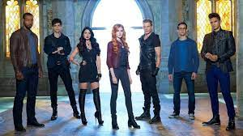
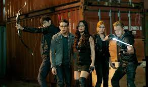

Campanha Publicitárias Shadowhunters
1º Temporada
Clary Fray descobre em seu aniversário de 18 anos que ela não é normal como pensava, e que vem de uma longa linhagem de Caçadores de Sombras, híbridos de anjo com humanos que caçam demônios. Agora imersa no mundo de caça aos demônios depois que sua mãe é sequestrada, Clary deve confiar no misterioso Jace e seus colegas Caçadores de Sombras, Isabelle e Alec, para navegar por esse novo mundo sombrio. Junto de seu melhor amigo Simon, Clary deve agora viver entre fadas, feiticeiros, vampiros e lobisomens para encontrar respostas que podem ajudar a encontrar sua mãe. Nada é o que parece, inclusive o amigo próximo da família chamado Luke que sabe mais do que vem dizendo, e também o enigmático feiticeiro Magnus Bane que pode ter a chave para destrancar o passado de Clary.
2º Temporada
A segunda temporada retorna com o Mundo das Sombras em agitação com Valentim e o Ciclo continuando a crescer a cada minuto e nosso grupo rapidamente se desiludindo com a Clave e sua reação aos recentes eventos. Lealdades serão testadas, ligações improváveis serão feitas, e relacionamentos serão levados ao limite conforme os Caçadores de Sombras e seus amigos Submundanos traçam seu próprio caminho em um novo mundo. Shadowhunters retornará para a segunda metade da 2ª temporada com os Caçadores de Sombras e Seres do Submundo lidando com os desdobramentos do que aconteceu no Instituto de Nova York na finale da S2A. À medida que a distância entre os dois lados cresce, a equipe e seus amigos e namorados Submundanos são colocados no meio da perigosa divisão. Divididos entre as regras da Clave e o que eles acham que é o certo, Clary, Jace, Alec e Isabelle lutam para ajudar a forjar um novo começo. Os relacionamentos serão testados, um novo Caçador de Sombras chamado Sebastian se juntará a luta e a Rainha Seelie sairá das sombras na S2B.
3º Temporada
Enquanto os Caçadores de Sombras lidam com mudanças em suas vidas pessoais e Clary e Jace mantêm segredos obscuros, uma séria ameaça aos Caçadores de Sombras emerge na forma de Lilith, um poderoso demônio construindo um exército de discípulos em uma missão para ressuscitar seu "precioso garoto" Jonathan. Os Caçadores de Sombras enfrentam um novo nível de mal que eles nem imaginam com o retorno de Jonathan Morgenstern.